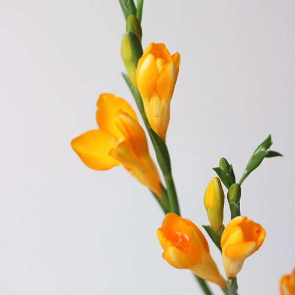
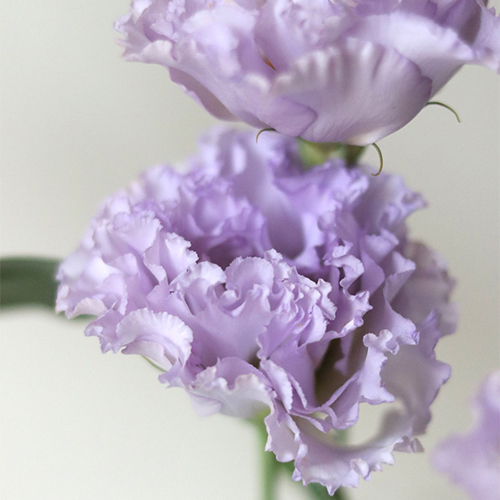
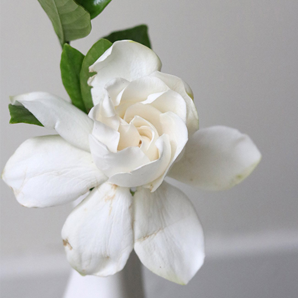
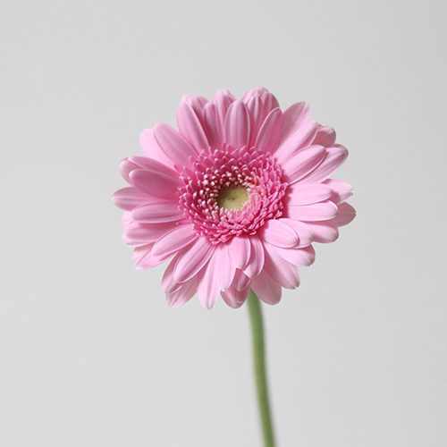
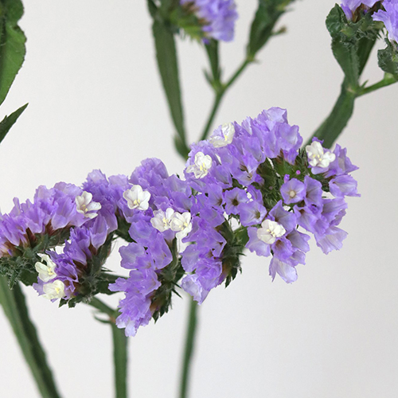
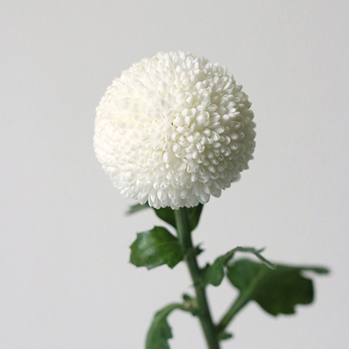

人們將情感或者願望寄託於花朵
用花來表達人的語言
花語雖無聲，但其無聲卻勝於有聲
人們可以借花朵向他人表達自己的情感
其中的含義和情感表達甚至勝於言語。
小蒼蘭的花語純潔、清香、 幸福、清新舒暢，是春季常見的花材。其中，橙黃色的小蒼蘭帶有滿滿的春日氣息。

小蒼蘭
Freesia
傳說桔梗花開代表幸福再度降臨。可是，有人能抓住幸福，有的人卻註定無緣。於是桔梗有著雙層含義，即永恆的愛和絕望的愛。

桔梗
Platycodon grandiflorus
一生的守候是最美的寄託也是愛情的寄予。平淡脫俗的外表之下，是美麗堅韌的生命本質。

梔子花
Gardenia jasminoides
瑪格麗特花代表著期待愛，粉色的花朵就像是一個少女在等待愛情。同樣，瑪格麗特花也代表著滿意、喜悅、驕傲、暗戀。

瑪格麗特
Argyranthemum frutescens
鬱金香的花語表達有愛情、慈善、名譽、美麗、祝福、永恆、愛的表達和永恆的祝福。
鬱金香
Tulipa gesneriana
永不變心的含義，可將其送給戀人表示愛情永恆，亦可表示一種深厚的情感，希望分別之後不要忘記彼此的深厚友誼。

星辰花
Limonium sinuatum
乒乓菊是圓形，象徵圓滿長久的愛情。愛情需要甜蜜、圓融，很多時候會搭配玫瑰花來用，代表愛情圓滿長久。
